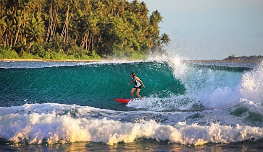
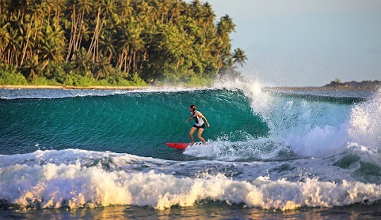

Keindahan Pantai Lagundri
Pantai Lagundri adalah surga bagi para peselancar. Pantai ini menawarkan ombak yang sempurna untuk surfing dan pemandangan pantai yang memukau. Pantai Lagundri adalah salah satu pantai terbaik di Pulau Nias, Sumatera Utara. Lokasi pantai ini adalah di Kabupaten Nias Selatan, tidak jauh dari Pantai Saroke, kira-kira 13 km di selatan Kota Teluk Dalam. Lokasi pantai ini berdahapan langsung dengan Samudera Indonesia. Pantai Lagundri sangat digemari oleh para peselancar, baik untuk peselancar pemula bahkan peselancar yang sudah master. Ombak yang dimiliki pantai ini tingginya adalah 6 sampai 9 meter dengan berbagai tingkatan. Panjang daya dorong ombak pantai ini adalah 200 meter.
 
